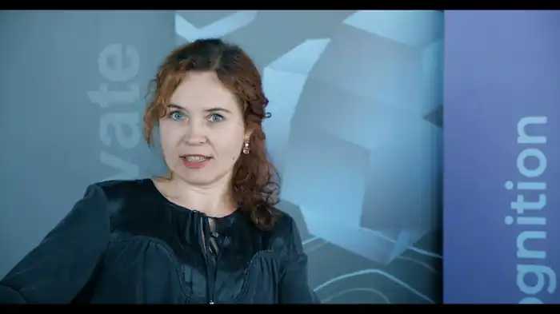

Дитяча письменниця. Народилася 18 грудня 1969 року в Луцьку. 1989-го закінчила Луцьке педагогічне училище ім. Ярослава Галана, у 1994 році – Київський державний педагогічний університет ім. Драгоманова. Живе і працює в Києві.
Працювала в Українському центрі народної культури "Музей Івана Гончара", де виконувала обов'язки прес-секретаря, згодом очолила тамтешній відділ зв'язків із громадськістю. Від 2004 року – літературний редактор журналу "Малятко". З 2010-го втілювала власний авторський проект на Українському радіо (програма "Великий світ малого читача", канал "Культура").
Лауреат літературної премії ім. Наталі Забіли (2006) та літературного конкурсу "Рукомесло" (2009). Експертка літературного конкурсу "Коронація слова" у номінації "Проза для дітей" (2010 р.) та в номінації "Пісенна лірика для дітей" (2011, 2013, 2014 р.р.) Член журі літературної премії "Великий їжак" (2011 р.) та літературної премії НСПУ ім. Платона Воронька (2018 р.). 2019—2021 р.р. — засновниця та координаторка Всеукраїнського літературно-мистецького проєкту "Драгоман". 2019—2021 р.р. — упорядниця та літературна редакторка серії літературно-музичних видань "Нескорений ПроRock. Тарас Шевченко" (2020 р.), "Нескорений ПроRock. Олена Теліга" (2020 р.), "Нескорений ПроRock. Василь Симоненко" — мистецький проєкт "Нескорений ПроRock" ГС "Музичний батальйон". Твори Оксани Кротюк вивчаються за освітньою програмою початкової школи. Низку їх вміщено у хрестоматіях для позакласного та дошкільного читання. Авторка книжок для дітей "Неслухняне левеня" (2008), "Найкраща земля" (2008), "Веселі єноти" (2009), "Абетка" (2011), "В зоопарку" (2012), "Чорне море й синій кит" (2012). Твори також друкуються в дитячих журналах "Малятко", "Зернятко", "Пізнайко", "Ангелятко", "Крилаті" й колективних збірках.